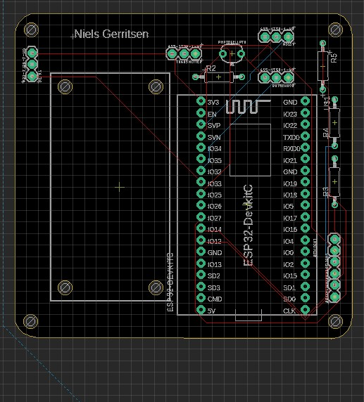
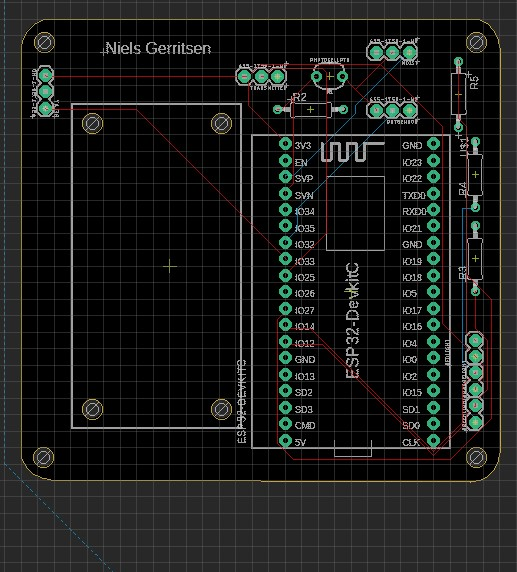

SMART TECHNOLOGY
Welkom op de Smart Technology site. Op deze site komt mijn ontwikkeling op basis van Smart technology aan bod.


IOT & PCB ontwerpen
In dit onderdeel van de minor heb ik de moederbord en electronica van het plantenbakje ontworpen. Aangezien ik dit nooit eerder had gedaan was dit voor mij compleet nieuw.
Op de moederbord(PCB) worden alle electrische onderdelen die nodig zijn voor de plantensensor gemonteerd. Voordat we hier mee begonnen hebben we gebruik gemaakt van een breadbox waarop we de onderdelen en port van de ESP verbinden.
Wanneer deze waren verbonden doormiddel van kleine kabels moest er code worden geschreven. Dit coderen was voor mij ook de eerste keer. Maar door de uitleg op robot exchange en de eventuele hulp van mijn klasgenoten lukte het mij om de eerste les al meerdere stappen te voltooien.
Ik heb thuis meerdere huisplanten die ik onderhoud en stuurde uit enthouisme meteen het volgende filmpje door richting mijn ouders met het nieuws dat ze dadelijk geen planten meer water hoefde te geven. Nadat alle onderdelen waren gekoppeld heb ik het systeem aan Blynk gekoppeld. Voor mij was dit best moeilijk, via blynk had ik uiteindelijk voor elkaar gekregen om de gegevens in te kunnen zien. De mogelijkheid om de atuomatersing te overrulen was mij niet gelukt. Hiervoor heeft uiteindelijke Mathijs(klasgenoot) geholpen.
Op de moederbord(PCB) worden alle electrische onderdelen die nodig zijn voor de plantensensor gemonteerd. Voordat we hier mee begonnen hebben we gebruik gemaakt van een breadbox waarop we de onderdelen en port van de ESP verbinden.
Wanneer deze waren verbonden doormiddel van kleine kabels moest er code worden geschreven. Dit coderen was voor mij ook de eerste keer. Maar door de uitleg op robot exchange en de eventuele hulp van mijn klasgenoten lukte het mij om de eerste les al meerdere stappen te voltooien.
Ik heb thuis meerdere huisplanten die ik onderhoud en stuurde uit enthouisme meteen het volgende filmpje door richting mijn ouders met het nieuws dat ze dadelijk geen planten meer water hoefde te geven. Nadat alle onderdelen waren gekoppeld heb ik het systeem aan Blynk gekoppeld. Voor mij was dit best moeilijk, via blynk had ik uiteindelijk voor elkaar gekregen om de gegevens in te kunnen zien. De mogelijkheid om de atuomatersing te overrulen was mij niet gelukt. Hiervoor heeft uiteindelijke Mathijs(klasgenoot) geholpen.

 

Na het koppelen van de apparaten kon ik beginnen met het ontwerpen van de PCB. Dit heb ik in EAGLE gedaan. Ik had in het begin geprobeerd alles zo klein mogelijk te houden. Toen ik eenmaal de tip kreeg om ruimte over te houden heb ik de PCB groter gemaakt zodat de kabels goed weggewerkt konden worden.
Voor het maken van de schroefgaten in de PCB had ik nagevraagd bij Mathijs (IOT) wat de beste diameter is. Hieruit kwam dat ik zelf de vrijheid had om elk schroefje te kunnen gebruiken. Alleen had ik nog steeds geen idee wat dat zou zijn, dus ben ik voor een schroefje gegaan van 3 mm. Omdat ik meerder LED's ging gebruiken heb ik deze ook in het systeem moeten zetten, hierbij was ik in eerste instatie vergeten dat er weerstanden gebruikt moesten worden. Gelukkig had ik deze op tijd ingetekend.
Uiteindelijk heb ik de PCB gesoldeerd met overal tussenstukjes ertussen zodat ik geen kans had om de onderdelen te beschadigen. Het solderen was voor mij ook nieuw, maar ik vind dat ik het best goed deed. Mijn soldeerwerk zal alleen niet de schoonheidsprijs winnen.
Voor het maken van de schroefgaten in de PCB had ik nagevraagd bij Mathijs (IOT) wat de beste diameter is. Hieruit kwam dat ik zelf de vrijheid had om elk schroefje te kunnen gebruiken. Alleen had ik nog steeds geen idee wat dat zou zijn, dus ben ik voor een schroefje gegaan van 3 mm. Omdat ik meerder LED's ging gebruiken heb ik deze ook in het systeem moeten zetten, hierbij was ik in eerste instatie vergeten dat er weerstanden gebruikt moesten worden. Gelukkig had ik deze op tijd ingetekend.
Uiteindelijk heb ik de PCB gesoldeerd met overal tussenstukjes ertussen zodat ik geen kans had om de onderdelen te beschadigen. Het solderen was voor mij ook nieuw, maar ik vind dat ik het best goed deed. Mijn soldeerwerk zal alleen niet de schoonheidsprijs winnen.
Ontwerpen 3D print bakje
Om de electronica buiten het zicht te houden en alles bij elkaar te houden heb ik een bakje gemaakt. Dit bakje werd 3D geprint en moest ontworpen worden in solidworks. Ook dit is een aspect wat ik nog nooit heb gedaan.
Voor het 3d bakje heb ik 2 verschillende versies gemaakt. De eerste versie was een standaard bakje waarbij de deksel en de pcb werden vast geschroefd in het bakje. Hiervoor waren dan ook supports nodig die ervoor zorgde dat het bakje groter werd.
De tweede versie van het bakje is er een waarbij de pcb word ingeschoven en de deksel met klikvingers wordt vastgemaakt. De verschillende foto's van dit ontwerp is te zien in de slideshow aan de rechterkant. Vanuit het advies van harold heb ik geprobeerd deze zo flexibel mogelijk maar ook stevig genoeg te maken. Alleen is dit niet gelukt. Ik had de klikvingers te dun gemaakt waardoor tijdens het weghalen van de support deze niet goed werkte. Hierdoor heb ik aan de onderkant het bakje bijgewerkt.
Omdat ik verschillende planten heb en deze op verschillende plekken staan wou ik een bakje maken dat kan hangen aan de plant. Ook zorgt dit ervoor dat planten die met de pot in de schaduw en met de rest wel in het licht staan niet een onjuiste licht inval word waargenomen.
Voor het 3d bakje heb ik 2 verschillende versies gemaakt. De eerste versie was een standaard bakje waarbij de deksel en de pcb werden vast geschroefd in het bakje. Hiervoor waren dan ook supports nodig die ervoor zorgde dat het bakje groter werd.
De tweede versie van het bakje is er een waarbij de pcb word ingeschoven en de deksel met klikvingers wordt vastgemaakt. De verschillende foto's van dit ontwerp is te zien in de slideshow aan de rechterkant. Vanuit het advies van harold heb ik geprobeerd deze zo flexibel mogelijk maar ook stevig genoeg te maken. Alleen is dit niet gelukt. Ik had de klikvingers te dun gemaakt waardoor tijdens het weghalen van de support deze niet goed werkte. Hierdoor heb ik aan de onderkant het bakje bijgewerkt.
Omdat ik verschillende planten heb en deze op verschillende plekken staan wou ik een bakje maken dat kan hangen aan de plant. Ook zorgt dit ervoor dat planten die met de pot in de schaduw en met de rest wel in het licht staan niet een onjuiste licht inval word waargenomen.